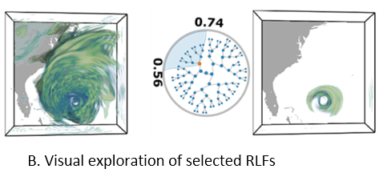
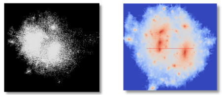

On March 14-16, we will be having a project PI meeting at the Hyatt in Bethesda, MD. Below are links to the handout, poster, and quad chart presenting the update material on the EDDA project that will be presented at the meeting.
Handout | Poster | Quad Chart
Detailed updates are contained in the following posts, with a link to the first in the set.
Link to this post

Problem: This work studies the input parameters (multi-resolution convective parameters) of multi-resolution climate simulations. Domain experts are specifically interested in: the correlations between parameters in the same resolution (intra-resolution correlation visualization) and the difference between parameters’ correlations in different resolutions (inter-resolution correlation comparison). It is also critical to build the connection between the multi-resolution convective parameters and the large spatial-temporal climate ensemble outputs.
Proposed Solution: Based on the requirements from domain experts, we propose an augmented design of parallel coordinates plots, called Nested Parallel Coordinates Plot (NPCP), to visualize the multi-resolution convective parameters in climate modeling. This new design of PCP has been integrated into a visual analytics system, which is equipped with multiple coordinated views, to help domain scientists build the connection between complex input parameter settings and spatial temporal ensemble outputs.
Link to this post

Problem: Interactive data exploration plays a fundamental role in analyzing three dimensional scientific data. Occlusion management and feature preservation are among the key factors to ensure effective identification and extraction of three-dimensional features. Existing methods may not able to combine the occlusion removal task, together with preserving features flexibly defined by data properties, while providing interactions with real-time performance.
Proposed Solution: we propose a new data exploration system that allows direct manipulation of data with cutting and splitting capabilities. The procedure is carried out by deforming a tetrahedral mesh that has a void in the middle to simulate the incision created by the cut. The splitting operation enlarges the void to allow users to observe the inner structure which was originally occluded. Our mesh is constructed with the local data properties taken into account, such as local data density or gradient. Therefore the deformation will affected by the selected data property. Regions with high data property values are more solid and harder to be deformed, while regions with lower property values will be deformed more. Therefore the deformation can keep interesting features of the data.
Link to this post

Problem: Uncertain data visualization plays a fundamental role in many applications such as weather forecast and analysis of fluid flows. Exploring scalar uncertain data modeled as probability distribution fields is a challenging task because the underlying features are often more complex, and the data associated with each grid point are high dimensional.
Proposed Solution: In this work, we present a compact and effective representation called Range Likelihood Tree (RLT), to summarize and explore probability distribution fields. The key idea is to consider the different roles that subranges (subspaces of the value domain) may play in understanding probability distributions, and decompose and summarize each complex probability distribution over a few representative subranges by cumulative probabilities. In our method, the value domain is first partitioned into subranges, then the distribution at each grid point is transformed according to the cumulative probabilities of the point’s distribution in those subranges. Organizing the subranges into a hierarchical structure based on how these cumulative probabilities are spatially distributed in the grid points, the new range likelihood tree representation allows effective classification and identification of features through user query and exploration. We present an exploration framework with multiple interactive views to explore probability distribution fields, and provide guidelines for visual exploration using our framework.
Link to this post
Problem:
Solution:

Problem: The computational power of modern supercomputers allow scientists to model physical phenomena with high-resolution simulation. However, analyzing such large-scale scientific simulation data is challenging due to the incompatibility between memory limitations, I/O capacities, and high computational power. Using distribution-based representation to handle big data sets becomes popular, but the distribution inherently lacks the spatial information of samples and causes the low visualization quality. Developing the technique to improve visualization quality from the distribution based representation is necessary.
Proposed Solution: In addition to the traditional value distribution, we construct and store the spatial distributions where the locations of samples are collected and stored as a multi-dimensional distribution for each value sub-range. Each multi-dimensional distribution is stored using compact distribution representation which is Spatial Gaussian Mixture Model (GMM). The Spatial GMM maps the locations of the data points in different value ranges to probabilities. When visualizing the data set, we utilize our representation to infer the probability for a value to reside at arbitrary location using Bayes’ rule, which combines known information (the value distribution) and additional evidences (the Spatial GMMs) from a given condition. Equipped with this spatial information, our approach produces lower variance, and hence lower uncertainty, in the results of statistical based analysis and visualizations.
Link to this post
Goal:
Implementation:


Problem: Distribution-based (histogram-based) features has been utilized in many volume analysis and visualization applications. However, local histogram computation and matching is difficult in multi-field dataset due to the high computational cost. 1. It’s infeasible to scan through the entire data space and compute and compare local histogram in each location. 2. The number of histogram bins increases exponentially as the number of fields or dimensions increases, which requires a large amount of bin-by-bin comparison. 3. The high computation cost when searching for large-sized feature, which is defined by a large neighborhood-sized histogram.
Proposed Solution: We utilizing bitmap indexing to reduce the search space from the entire space domain to the voxels whose values fall into the user-defined value range and their neighborhood voxels. Then apply the local deposit approach to construct a local histogram in an inverse way. In the multi-field feature search cases, we proposed two complementary algorithms for accelerating local distribution searches. Both algorithms first approximate a search result, and then use a low-cost refinement step to generate the final search result. The first approach is merged-bin comparison (MBC). Instead of comparing individual bins iteratively, we compare multiple histogram bins between two histograms in one pass. Utilizing a property of distance measures, our approximate search result from MBC has no false negatives so that the refinement process only needs to remove the false positives to generate the final result. The second approach is called sampled-active-voxels (SAV). This utilizes stratified sampling to quickly generate approximate initial results, which are close to the final results when compared to simple random sampling. So the cost of refinement can thus be reduced.
Link to this postSee below for several updates on the FY15 progress and results of the EDDA project.
Direct link to the first FY15 update
Download the OSU FY15 progress report
Link to this postApproximate aggregation has been a popular approach for interactive data analysis and decision making, especially on large-scale datasets. While there is clearly a need to apply this approach for scientific datasets comprising massive arrays, existing algorithms have largely been developed for relational data, and cannot handle both dimension-based and value-based predicates efficiently while maintaining accuracy. We present a novel approach for approximate aggregations over array data, using bitmap indices or bitvectors as the summary structure, as they preserve both spatial and value distribution of the data. We develop approximate aggregation algorithms using only the bitvectors and certain additional pre-aggregation statistics (equivalent to a 1-dimensional histogram) that we require. Another key development is choosing a binning strategy that can improve aggregation accuracy -- we introduce a v-optimized binning strategy and its weighted extension, and present a bitmap construction algorithm with such binning. We compare our method with other existing methods including sampling and multi-dimensional histograms, as well as the use of other binning strategies with bitmaps. We demonstrate both high accuracy and efficiency of our approach. Specifically, we show that in most cases, our method is more accurate than other methods by at least one order of magnitude. Despite achieving much higher accuracy, our method can require significantly less storage than multi-dimensional histograms.
Link to paper | Link to slides
Link to this post
Neither the memory capacity, memory access speeds, nor disk bandwidths are increasing at the same rate as the computing power in current and upcoming parallel machines. This has led to considerable recent research on in-situ data analytics. However, many open questions remain on how to perform such analytics, especially in memory constrained systems. Building on our earlier work that demonstrated bitmap indices (bitmaps) can be a suitable summary structure for key (offline) analytics tasks, we have developed an in-situ analysis approach that performs data reduction (such as time-steps selection) using just bitmaps, and subsequently, stores only the selected bitmaps for post-analysis. We construct compressed bitmaps on the fly, show that many kinds of in-situ analyses can be supported by bitmaps without requiring the original data (and thus reducing memory requirements for in-situ analysis), and instead of writing the original simulation output, we only write the selected bitmaps to the disks (reducing the I/O requirements). We also demonstrate that we are able to use bitmaps for key offline analysis steps. We extensively evaluate our method with different simulations and applications, and demonstrate the effectiveness of our approach.
Link to paper | Link to slides
Link to this post
Computing power has increased faster than the amount of storage bandwidth or the ability to read stored data. Thus, researchers can perform large-scale, high-resolution simulations, but they are unable to load all the data into local memory. Performing queries becomes necessary; however, as the size of the data increases, queries will also be time-consuming. Bitmap indexing was originally developed for faster query processing of read-mostly data, but has recently been used for scientific data management. It consists of a set of bit vectors, where one vector corresponds to a distinct attribute value or range of values. Each bit is mapped to a record, and the bit value is 1 if the record matches the property in focus. Bitmap indexing is able to perform complex logical operations quickly, but for floating-point attributes, the bitmap indexing will be lossy because the bit vector values must be binned. Different strategies have been proposed to bin bit vectors value.
A review of the current literature on bitmap indexing has identified the need for a comparative error metric to assess the binning scheme of bit vectors. This metric will incorporate multiple, conflicting criteria, such as query processing speed and index size, provide uncertainty on the assessment, and allow for a sensitivity analysis. This error metric will eventually be used as the bitmap index is being created in situ to indicate when the current binning strategy is no longer optimal.
Emily Casleton (LANL), Joanne Wendelberger (LANL), Jon Woodring (LANL)
Link to this post
In the era of big data analytics, efficient data transformation and summarization is becoming a popular approach for big data handling. Since it is almost impossible to store all the raw data, an information rich data representation can benefit data analysts immensely by reducing the size of the data to a manageable scale yet preserving the features in the data with high accuracy. In order to perform this task, we need to identify data summarization techniques which are compact, easy to compute and represent. Furthermore, a comparative framework is also need to be devised which will take different data summarization techniques and compare their effectiveness in terms of several critical parameters such as representation accuracy, storage cost, computation time, errors incurred etc. This work aims at producing such a comparative framework. Majority of the data summarization techniques try to prioritize the data by partitioning it into smaller regions and summarizing each region with appropriate representatives. Each of such representation algorithms in general can be divided into three steps: (1) data partitioning, (2) partition summarization and (3) error estimation. Therefore the accuracy and effectiveness of those representative algorithms is of prime importance to data scientists. To address these requirements, we have created a score-boarding framework which accepts several data summarization techniques and performs a global scale parameter study on them. Such a parameter study scheme is able to identify data specific transformation and summarization techniques which yields the best representation for the data. Since these transformation and summarization methods can not capture all the information the data has, appropriate error metrics are also an importance parameter in this study. By performing a comprehensive parameter study on a data set, we can analyze the results and find the best scheme of data summarization and the associated combination of parameters for it. The output of our framework is a database table where we keep track of all the test combinations and the results obtained by them in terms of data reduction, effectiveness of the summarization scheme, time taken to compute etc. By querying the output database, we can easily find the most effective algorithm and the associated parameter combinations which obtained the best result.
Soumya Dutta (LANL, OSU), Emily Casleton (LANL), Ayan Biswas (LANL, OSU), Jon Woodring (LANL), Jim Ahrens (LANL), Joanne Wendelberger (LANL)
Link to this post
Effective analysis of features in time-varying data is essential in numerous scientific applications. Feature extraction and tracking are two important tasks scientists rely upon to get insights about the dynamic nature of the large scale time-varying data. However, often the complexity of the scientific phenomena only allows scientists to vaguely define their feature of interest. Furthermore, such features can have varying motion patterns and dynamic evolution over time. As a result, automatic extraction and tracking of features becomes a non-trivial task. In this work, we investigate these issues and propose a distribution driven approach which allows us to construct novel algorithms for reliable feature extraction and tracking with high confidence in the absence of accurate feature definition. We exploit two key properties of an object, motion and similarity to the target feature, and fuse the information gained from them to generate a robust feature-aware classification field at every time step. Tracking of features is done using such classified fields which enhances the accuracy and robustness of the proposed algorithm. The efficacy of our method is demonstrated by successfully applying it on several scientific data sets containing a wide range of dynamic time-varying features.
Link to this postRepresenting features by local histograms is a proven technique in several volume analysis and visualization applications including feature tracking and transfer function design. The efficiency of these applications, however, is hampered by the high computational complexity of local histogram computation and matching. In this paper, we propose a novel algorithm to accelerate local histogram search by leveraging bitmap indexing. Our method avoids exhaustive searching of all voxels in the spatial domain by examining only the voxels whose values fall within the value range of user-defined local features and their neighborhood. Based on the idea that the value range of local features is in general much smaller than the dynamic range of the entire dataset, we propose a local voting scheme to construct the local histograms so that only a small number of voxels need to be examined. Experimental results show that our method can reduce much computational workload compared to the conventional approaches. To demonstrate the utility of our method, an interactive interface was developed to assist users in defining target features as local histograms and identify the locations of these features in the dataset.
Link to this post
As the size of data continues to increase, distribution-based methods become increasingly more important for data summarization and queries. To represent the distribution from a dataset without relying on a particular parametric model, histograms are widely used in many applications as it is simple to create and efficient to query. For multivariate scientific datasets, however, storing multivariate histograms in the form of multi-dimensional arrays is very expensive as the size of the histogram grows exponentially with the number of variables. In this paper, we present a compact structure to store multivariate histograms to reduce its huge space cost while supporting different kinds of histogram queries efficiently. A data space transformation is employed first to transform the large multi-dimensional array to a much smaller array. Dictionaries are constructed to encode this transformation. Then, the multivariate histogram is represented as a sequence of index and frequency pairs where the indices are represented as bitstrings computed from a space filling curve traversal of the transformed array. With this compact representation, the storage cost for the histograms is reduced. Based on our representation, we also present several common types of queries such as histogram marginalization, bin-merging and computation of conditional probability. We parallelize both the histogram computation and queries to improve its efficiency. We present several query-driven visualization applications to explore and analyze multivariate scientific datasets. Experimental results to study the performance of our framework in terms of scalability and space cost are also discussed.
Kewei Lu, Han-Wei Shen. The 5th IEEE Symposium on Large Data Analysis and Visualization, 2015.
Link to this postAlthough vortex analysis and detection have been extensively investigated in the past, none of the existing techniques are able to provide fully robust and reliable identification results. Local vortex detection methods are popular as they are efficient and easy to implement, and produce binary outputs based on a user-specified, hard threshold. However, vortices are global features, which present challenges for local detectors. On the other hand, global detectors are computationally intensive and require considerable user input. In this work, we propose a consensus-based uncertainty model and introduce spatial proximity to enhance vortex detection results obtained using point-based methods. We use four existing local vortex detectors and convert their outputs into fuzzy possibility values using a sigmoid-based soft-thresholding approach. We apply a majority voting scheme that enables us to identify candidate vortex regions with a higher degree of confidence. Then, we introduce spatial proximity- based analysis to discern the final vortical regions. Thus, by using spatial proximity coupled with fuzzy inputs, we propose a novel uncertainty analysis approach for vortex detection. We use expert’s input to better estimate the system parameters and results from two real-world data sets demonstrate the efficacy of our method.
Link to this post
Identification of early signs of rotating stall is essential for the study of turbine engine stability. With recent advancements of high performance computing, high-resolution unsteady flow fields allow in depth exploration of rotating stall and its possible causes. Performing stall analysis, however, involves significant effort to process large amounts of simulation data, especially when investigating abnormalities across many time steps. In order to assist scientists during the exploration process, we present a visual analytics framework to identify suspected spatiotemporal regions through a comparative visualization so that scientists are able to focus on relevant data inmore detail. To achieve this, we use a statistical anomaly detection method to locate possible stall inception. We further derive algorithms from domain knowledge and convey the analysis results through juxtaposed interactive plots. Using our integrated visualization system, scientists can visually investigate the detected regions for potential stall initiation and further explore these regions to enhance the understanding of this phenomenon. Positive feedback from scientists demonstrate the efficacy of our system in analyzing rotating stall.
Link to this postThe EDDA library aims at visualizing distribution data for uncertainty analysis.
The goal is to provide a unified data model with generic distribution representations for the development of uncertainty visualization algorithms. The distribution models to support will be parametric distributions like Gaussian and GMM, un-parametric distributions like histogram and KDE, as well as joint distributions. These are encapsulated into C++ template classes. Coupled with our experiences on developing regular and curvilinear-grid datasets in OSUFlow, we provide an API allowing to query for the distribution of a given 3D position. The return of the query can be either the interpolated distribution or a Monte-Carlo sample of the distribution, depending on the need of the visualization algorithm. We also provide distribution arithmetic and analysis tools including project ITL.
Chun-Ming Chen, et al. (OSU)
Link to this post

When the spatial and temporal resolutions of a time-varying simulation become very high, it is not possible to process or store data from every time step due to the high computation and storage cost. Although using uniformly down-sampled data for visualization is a common practice, important information in the un-stored data can be lost. Currently, linear interpolation is a popular method used to approximate data between the stored time steps. For pathline computation, however, errors from the interpolated velocity in the time dimension can accumulate quickly and make the trajectories rather unreliable. To inform the scientist the error involved in the visualization, it is important to quantify and display the uncertainty, and more importantly, to reduce the error whenever possible. In this paper, we present an algorithm to model temporal interpolation error, and an error reduction scheme to improve the data accuracy for temporally down-sampled data. We show that it is possible to compute polynomial regression and measure the interpolation errors incrementally with one sequential scan of the time-varying flow field. We also show empirically that when the data sequence is fitted with least-squares regression, the errors can be approximated with a Gaussian distribution. With the end positions of particle traces stored, we show that our error modeling scheme can better estimate the intermediate particle trajectories between the stored time steps based on a maximum likelihood method that utilizes forward and backward particle traces.
Link to this postThe heterogeneity and complexity of multivariate characteristics poses a unique challenge to visual exploration of multivariate scientific data sets, as it requires investigating the usually hidden associations between different variables and specific scalar values to understand the data’s multi-faceted properties. We present a novel association analysis method that guides visual exploration of scalar-level associations in the multivariate context. We model the directional interactions between scalars of different variables as information flows based on association rules. We introduce the concepts of informativeness and uniqueness to describe how information flows between scalars of different variables and how they are associated with each other in the multivariate domain. Based on scalar-level associations represented by a probabilistic association graph, we propose the Multi-Scalar Informativeness-Uniqueness (MSIU) algorithm to evaluate the informativeness and uniqueness of scalars. We present an exploration framework with multiple interactive views to explore the scalars of interest with confident associations in the multivariate spatial domain, and provide guidelines for visual exploration using our framework. We demonstrate the effectiveness and usefulness of our approach through case studies using three representative multivariate scientific data sets.
Link to this post
We conducted a study of density estimation, the conversion of discrete particle positions to a continuous field of particle density defined over a 3D Cartesian grid. The study features a methodology for evaluating the accuracy and performance of various density estimation methods, results of that evaluation for four density estimators, and a large-scale parallel algorithm for a self-adaptive method that computes a Voronoi tessellation as an intermediate step. We demonstrated the performance and scalability of our parallel algorithm on a supercomputer when estimating the density of 100 million particles over 500 billion grid points.
Peterka, et al. (ANL) Submitted to SIAM Journal on Scientific Computing SISC Special Section on CSE15: Software and Big Data, 2015.
Link to this postOn Tuesday, January 13-15, there will be a Principal Investigator (PI) Meeting, for projects funded under the Scientific Data Management, Analysis and Visualization (SDMAV) by DOE SC ASCR, in Walnut Creek, CA. EDDA PIs and investigators will be present for this meeting. Below are links to download materials to be presented at this meeting for the EDDA project.
Link to this postThe acronym for our project is EDDA, which if you google for it you find the description for Edda on wikipedia.
The term "Edda" (/ˈɛdə/; Old Norse Edda, plural Eddur) applies to the Old Norse Poetic Edda and Prose Edda, both of which were written down in Iceland during the 13th century in Icelandic, although they contain material from earlier traditional sources, reaching into the Viking Age. The books are the main sources of medieval skaldic tradition in Iceland and Norse mythology.
Runic alphabets, in particular futhark ("th" is the thorn: þ, fuþark), was used by Scandanavian (Norse) and its use was noted use in Eddic lore.
In Norse mythology, the runic alphabet is attested to a divine origin (Old Norse: reginkunnr). This is attested as early as on the Noleby Runestone from approximately 600 AD that reads Runo fahi raginakundo toj[e'k]a..., meaning "I prepare the suitable divine rune..." and in an attestation from the 9th century on the Sparlösa Runestone, which reads Ok rað runaR þaR rægi[n]kundu, meaning "And interpret the runes of divine origin".
J.R.R. Tolkien used derivatives of futhark to describe the alphabet used by the dwarves and even created his own called Cirth.
Well, what does this all mean for our logo? It's the transliterated version of EDDA into elder futhark.
As it becomes more difficult to analyze large-scale simulation output at full resolution, users will have to review and identify regions of interest by transforming data into compact information descriptors that characterize simulation results and allow detailed analysis on demand. This is because exascale architectures will be much more constrained with respect to data movement, and in situ data processing will be the norm, where the goals are to fit the total amount of output data within a budget, to summarize and triage data based on content, and to classify and index data to facilitate efficient offline analysis. In addition, in situ analysis must be performed in a time and space efficient fashion, not only to avoid slowing down the simulation, but also to not consume too much memory.
Among many different feature descriptors, the statistical information derived from data samples is a promising approach to taming the big data avalanche, because data distributions computed from a population can compactly describe the presence and characteristics of salient features with minimal data movement. The ability to computationally summarize and process data using distributions provides an efficient and representative capture of the information content of a large-scale data set. This representation can adjust to size and resource constraints, with the added benefit that uncertainty can be quantified and communicated.
In this project, we posit that with the growing number of cores per node, with increasing memory and I/O constraints in emerging extreme-scale platforms, it will be feasible and desirable to compute distributions at simulation time, perform memory-efficient in situ analysis using distributions, and save distributions as a space-efficient summarization for on-demand, offline visualization and analysis of salient features. The key development will be a novel distribution-based analysis and visualization framework based on in situ pro- cessing of extreme-scale scientific data. Our goals are to ensure that scientists can easily obtain an overview of the entire data set regardless of the size of the simulation; understand the characteristics and locations of the features; easily interact with the data and select regions and features of interest; and perform all the analysis tasks with a small memory footprint.
Link to this post